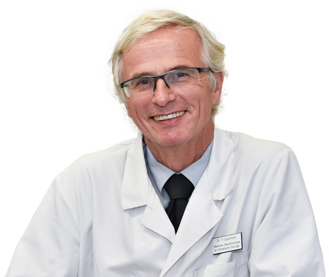

The second WORLD Congres on FACIAL PALSY - Mayo Clinic Chang Gung Symposium 2018
Prof DAVID CHUANG in TAIWAN will host the Second WORLD CONGRES on facial PALSY . PROF G uelinckx will lecture on EYE CLOSURE
Klik hier voor meer info